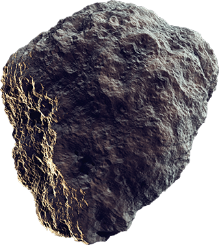
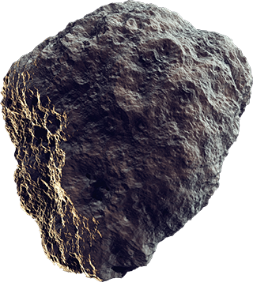
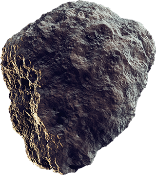

Página creada solo con fines ilustrativos.
Por Joseangel Bolívar
Cargando...

Página creada solo con fines ilustrativos.
Por Joseangel Bolívar
El asteroide 2024 YR4 es un asteroide cercano a la Tierra, lo que significa que es un asteroide que tiene una órbita que lo lleva al interior de la región de la órbita terrestre en el sistema solar. Se estima que 2024 YR4 mide entre 40 y 90 metros (130 a 300 pies) de ancho y tiene una probabilidad muy pequeña de hacer impacto con la Tierra el 22 de diciembre de 2032.
Este objeto es de particular interés para la defensa planetaria por dos razones: 1) es lo suficientemente grande como para ocasionar daños en un área localizada, en el caso poco probable de que choque con la Tierra y 2) aunque existe una posibilidad muy pequeña de que 2024 YR4 haga impacto con la Tierra en 2032, ha superado el umbral de probabilidad de impacto del 1%, lo cual justifica la notificación formal sobre este objeto a otras agencias gubernamentales de Estados Unidos involucradas en la defensa planetaria, así como al Grupo Asesor para la Planificación de Misiones Espaciales y a la Oficina de Asuntos del Espacio Ultraterrestre de las Naciones Unidas, según los estatutos de la Red Internacional de Alerta de Asteroides para tales notificaciones.
A medida que se obtengan más observaciones de la órbita del asteroide, se conocerá mejor la probabilidad de su impacto. Es posible que se descarte el peligro de impacto de 2024 YR4, como ha sucedido con muchos otros objetos que han aparecido previamente en la lista de riesgo de asteroides del Laboratorio de Propulsión a Chorro (JPL, por sus siglas en inglés) de la NASA. También es posible que la probabilidad de su impacto continúe aumentando. Los datos más recientes seguirán estando disponibles en la página automatizada del sitio web en Sentry de la NASA, en inglés. También se seguirán publicando actualizaciones en el blog sobre defensa planetaria de la NASA, también en inglés.
El informe sobre 2024 YR4 fue notificado por primera vez al Centro de Planetas Menores (el centro internacional de intercambio de información sobre cuerpos celestes pequeños y los datos de medición de sus posiciones) por el Sistema de Última Alerta de Impacto Terrestre de Asteroides (ATLAS, por sus siglas en inglés), un organismo financiado por la NASA, el 27 de enero de 2025 desde Chile. ATLAS se compone de varios telescopios en diferentes lugares del mundo y es administrado por el Instituto de Astronomía de la Universidad de Hawái.
Fuente: NASA Ciencia